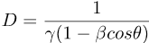
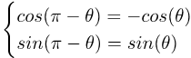
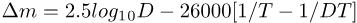

{kind=link}

Earlier, we defined a signal as a physical object (matter, radiation) that moves energy from one place to another. This section focuses on radiant signals only (or just signals for short). The most common radiant signal is light (photons of electromagnetic radiation). In addition to making measurements on passing objects, sensors can also make measurements by detecting radiant signals. The best example of this is an astronomical telescope. It's usually not possible to travel to distant astronomical objects, so astronomers are left with the only source of data left to them: the incoming signals hitting their detectors. It's true that the ultimate source of the signal is distant, but the detection event itself is a local measurement on the signal as it arrives at the local sensor. The only difference is that the signal usually refers back to a distant, non-local object.
Astronomers make use of all the incoming radiant signals they can get their eager hands on:
First, quantities related to the energy carried by the signal:
The quantities listed here are all relative to a given grid. They aren't invariant.
Signals travelling at the speed limit (such as light) must arrive at the detector by travelling on the detector's past light cone. Quantities related to direction can be found by looking at the intersection of the detector's past light cone with the history of the emitter.
When an object can be approximated as a point, then its history is a curve or a line. When an object has a measurable size, then it's said to be an extended object, and it can't be approximated as a point. To represent an extended object, you can represent it as a collection of points that form a volume in space. In space-time, the history of the object is the collected histories of all those points, taken as a group. That collection makes up a history tube in space time. It corresponds to the volume of points changing position over time.
The diagram above shows the past light cone of a detector intersecting the history tube of an extended object, at one moment in time according to the detector's wristwatch. You can see that, in general, the intersection events are the same as the emission events of the light signal, corresponding to light emitted from the surface of the extended object. The emission events don't all share the same ct value: they aren't simultaneous. This is because the light cone slices across the history tube at a 45° angle. However, the light signal detection events are indeed simultaneous, since the light signals all meet up at the same event.
So, the image of an extended object seen in a detector is made up of light that was emitted at different times. This is simply caused by the differences in travel-time for the light emitted from the different parts of the object.
When the object isn't moving with respect to the detector, the differences in travel-time don't make much difference. When the object is moving with respect to the detector, and when the differences in travel-time are significant, then the differences show up as distortions in the detected image. The larger the differences in travel-time, the greater the distortions.
When the object is sufficiently distant from the detector, then the light cone can be approximated as a plane instead of a cone, over the region where it intersects the object's history.
A surface in space-time can intersect the history of a given object. Let's call the intersection of a surface with the history of an object a slice of the history. There are two important ways to slice an object's history:
| Name | Intersect History With | Defines |
|---|---|---|
| Time-slice | a surface ct=constant | the spatial geometry of an object with respect to a given grid |
| Light-slice | the past light cone of a detector | the optical properties of an object in a given detector |
Sometimes a light-slice of an object's history in spacetime can be approximated using a plane instead of a cone, with the plane oriented at 45 degrees with respect to the ct axis (and oriented in the right direction). This only works if the object subtends a small angle at the detector. In that case, the curvature of the past light cone is very small in the region of the object's history.
The energy and direction of motion of a photon with respect to a grid are represented in a diagram like this:
These diagrams are similar in structure to space-time, but:
The diagrams are a bit different because they show photons as a wave vector (or propagation vector):
In the diagram above on the left, the blue arrow indicates a photon with higher energy than the green arrow, since it has a greater length. We're making use of various colors for wave vectors, to show their relative energy differences:
The selected events appear in a circle centered on the ct axis. This animation shows how these events get boosted. As you can see, the usual toothpaste effect still applies: some events are squeezed toward the origin, while others are stretched away from it.
The important point here is that the boost transformation for these events on the light cone can be interpreted as applying to wave vectors as well. The reason this works is because, as mentioned above, the photon vector is a 4-vector. So, the boost transformation for events also defines how the 4 parts of the wave vector change during a boost, in the same way it does for events. It's the exact same math, and the exact same geometry. So, the boost transformation for these events shows how to calculate the change in frequency and direction of photons.
The circle around the ct axis corresponds to wave vectors having the same energy, but different directions. The generated ellipse corresponds to how these wave vectors appear in the boosted grid.
The ellipse in the animation shows two important effects:
There are 3 directions to be aware of:
The detector-direction is exactly opposite the photon-direction.
Both the photon-direction and the detector-direction make a certain angle with the boost-direction. In a boosted grid, the photon-direction is deflected away from the boost-direction. Equivalently, the detector-direction is deflected towards the boost-direction. These are illustrated in the diagrams below.
This effect is called the aberration of light. Like the the pancake effect, aberration is highly directional in nature.
When travelling in a spacecraft at relativistic speeds in interstellar space, the stars would be seen as bunched up towards the direction of motion of the spacecraft. The aberration of light was discovered by accident by James Bradley in 1729.
There are two versions of the aberration formula, one for the photon-direction, and one for the detector-direction. In the formulas below, the prime denotes the boosted grid, and the angles are with respect to the boost-direction.
A boost deflects the detector-direction toward the boost-direction, from D to D':
A boost deflects the photon-direction away from the boost-direction, from P to P':
The effect of aberration can be equivalently seen as:
Periodic processes can send out periodic signals. The signal is usually electromagnetic radiation moving at the speed limit. These signals can be detected by the sensors in a grid. In this way, each sensor can measure the frequency of the signals received at its own location. There are two cases, depending on whether the signal source and the detector are moving with respect to each other:
Examples using light signals (in green).
Here the signal source and the two detectors are not moving with respect to each other:
Here the signal source is moving directly away from detector D1 and directly toward detector D2:
The change in frequency of a signal from a source moving relative to a detector is called the Doppler effect. Here's an animation showing the effect for motion along the x axis. The Doppler effect has two underlying causes, which can work in opposing ways:

The Doppler factor D is a bit trickier than β and γ, since it depends on two things, not just one:
For each β, there's always a θ for which D=1, and the effect passes from blueshift to redshift (or vice versa). Here, the angle (from the direction of motion) for which D=1 is called the neutral angle. The neutral angle is always less than or equal to 90°. Objects at the neutral angle have D=1, and are neither blueshifted nor redshifted.
This animation is an excellent way to explore how D changes with β and θ. Note that for the case of θ=90° (the case of transverse motion), D is just the inverse of the warp factor γ. Here's a second animation that combines aberration and the Doppler effect in a single diagram.
The frequency of a signal seen by a detector is the frequency-at-rest multiplied by the Doppler factor D. The Doppler factor appears again and again in formulas related to waves and light. Some examples:
| Item | Varies As | Item | Varies As |
|---|---|---|---|
| Any Frequency | D | Plane Wave Energy Density (J m-3) | D2 |
| Photon Energy | D | Plane Wave Energy Flux Density (J s-1 m-2) | D2 |
| Photon Frequency | D | Temperature of black body radiation | D |
| Photon Wave Number | D | Solid angle | D-2 |
| Photon Wavelength | D-1 | Angular size | D-1 |
| Plane Wave E,H field intensities | D | Detected energy per sec per sterad | D4 |
| Aberration sin θ | D-1 | Emitted energy per sec per sterad | D3/γ |

this can change signs in formulas that use a cos(θ). For example, here are two variations of the formula for the Doppler effect, which reflect the two ways of defining θ:
The returned value of D is the same in both cases, but the formula is different simply because of a different convention for defining θ.
There's a point of view, however, in which time dilation and the pancake effect can be seen as non-mysterious as the Doppler effect and aberration. The idea is that these effects are all tied together by the same mathematics: the boost transformation. All of these effects are consequences of how the boost transformation alters its input 4-vectors. In the case of time dilation and the pancake effect, the input 4-vectors are certain events. In the case of the Doppler effect and aberration, the input 4-vectors are the wave vectors (energy and direction of motion of the photon). But in all cases it's just the boost transformation, and only the boost transformation, that controls the physics.
The boost transformation changes an input 4-vector into an output 4-vector. For photons, the end-point of the wave vector stays on the light cone. It moves up and down the light cone (Doppler effect), and it changes its direction on the light cone (aberration). For the events involved with time dilation and the pancake effect, the end-point of the 4-vector (an event) also moves around on a surface, but the surface isn't a light cone, it's a hyperboloid corresponding to a given value of the squared-interval.
A cone and a hyperboloid don't have the same shape. But that difference shouldn't prevent us from viewing the two cases as being, at a high level, essentially the same kind of operation: a boost transformation mapping an input 4-vector to an output 4-vector, subject to the constraint of staying on a surface (either a light cone, or a hyperboloid with constant squared-interval).
From this point of view, it doesn't seem logically consistent to think of time dilation and the pancake effect as mysterious, while simultaneously thinking of the Doppler effect and aberration as non-mysterious.
Is the length contraction "real" or "apparent"? We might answer this by posing a similar question. Is the frequency, or wavelength, shift in the Doppler effect real or apparent?
If you define relativistic as meaning any physics that involves β, the ratio of a speed of something to the speed limit, then the first measurements of relativistic effects were made long before the creation of the theory of special relativity in 1905. The Doppler effect for light was predicted and measured in the 1840s. In 1729, the first measurement of stellar aberration was published by James Bradley. Stellar aberration is essentially a measurement of the ratio of the speed of the Earth in its orbit (relative to the center of mass of the solar system) to the speed of light.
In these early years, the formulas for stellar aberration and the Doppler effect were approximations to the full relativistic formulas, and were valid only for low values of β.
For the brightness of stars, astronomers usually measure brightness using a logarithmic scale called stellar magnitude. A bright star may have magnitude 1.0, while a dim star, barely visible to the human eye, might be of magnitude 6.0. The magnitude depends on the logarithm of the energy flux density (per hertz). For example, a difference of 5 magnitudes means a brightness difference of 100 times. For historical reasons, stellar magnitude actually increases as the brightness decreases (which is a bit confusing).
The radiation from stars is often roughly approximated as blackbody radiation, which is characterized by a temperature T expressed in Kelvins. The temperature T corresponds to the surface temperature of the star. The temperature also corresponds to the color of the star: cooler stars are reddish-orange, hotter stars are blue-white. During a boost, the temperature T is multiplied by the Doppler factor D, and the color also changes to match the new temperature.
For a star of surface temperature T, here's an approximate formula (McKinley, Doherty, 1979) for
the change in a star's brightness during a boost, expressed in stellar magnitudes,
which depends on both D and T (expressed in Kelvins):

Here's a
diagram
that illustrates the above formula.
It shows the change in magnitude for various
spectral classes
of stars.
The spectral class corresponds to the star's surface temperature T.
In summary, as β increases from zero,
After you reach top speed, you wouldn't see "star trails" as you travel through space, as often depicted in science fiction. Space is simply too empty and vast. Even at ultra-relativistic speeds, the chance of a rapid fly-by of a star is very, very small. These star trails are created by animators to simply give an impression of rapid motion. They've used physics that's appropriate for showing rapid motion on the surface of the Earth, but not for interstellar space. If you wanted to see an actual fly-by of a star, you would have to plan it precisely, and aim towards a specific target.
Here are two interesting graphs showing the total number of visible stars, their total relative brightness, and how they change with increasing β. These diagrams were created using 2,539,802 stars taken from the Tycho-2 star catalog. The limiting magnitude of 5.0 was selected to correspond to viewing the stars through a spacecraft window. As in the simulation, the direction of motion is towards Polaris. Notice the very strong cut-off at the highest speeds. This is because most of the starlight is blueshifted out of the visible range. Here, for the brightness unit, a single star of magnitude 0.0 has 1 unit of brightness.
Here's a large image created using the Tycho-2 star catalog. It shows the stars brighter than magnitude 5.0, at β=0.993, and it uses the stereographic projection. As in the simulation, the direction of motion is towards Polaris. The image file is large, and it may take your browser a few minutes to render it. It's best to download the image file directly, and open it in some tool other than a browser. The image differs from the simulation in these ways:
Because of small differences in the amount of aberration between different directions, the angular size of an extended source of light changes during a boost. During a boost, a (small) angular size is divided by the corresponding Doppler factor D. For example, an object appearing at 15° from the direction of motion, with β=0.6, will have its angular size reduced by D(0.6,15°)=1.9027 with respect to the same measurement in a grid with β=0. (The Doppler factor is applied here after accounting for aberration.)
This implies a curious effect. For a travelling spacecraft, items in the forward view will appear to have a smaller angular size, and will seem compressed, and apparently more distant, compared with the appearance from another spacecraft which is not moving in that direction. Conversely, items in the rearward view will appear magnified, and apparently closer, since D will be less than 1.
You can see this effect using the star field simulation, once for β=0 and once for β=0.5:
Spherical objects are an exception to the rule: the image of a spherical object will always have a circular outline in every grid, no matter what the boost.
There's a second exception as well. When an object has a small angular size as seen from the detector, then:
The apparent velocity b is usually split into two parts:
In an inertial grid, the true velocity of an object is extracted from the event data gathered by multiple sensors, strung out along the object's history. Here, we're measuring the apparent velocity b using direction data from a single sensor (located far from the emitter), combined with an independent meausurement of the distance. Remember that the apparent direction comes from the geometric intersection in space-time of the detector's past light cone and the emitter's history. This is another example of a geometric point that doesn't obey the speed limit rule. The apparent velocity of an object is not at all the same as its true velocity. (To emphasize this, it's best to use a different symbol b instead of β.)
Notice the scissors effect in the following diagrams for radial motion. At high β, the history of an approaching emitter can be at a very small angle with respect to the detector's light cone. Geometrically, it's sort of like the closing of a pair of scissors. As time passes, the intersection point will sweep across the emitter's history. The higher β, the faster the sweeping speed of the intersection point. The same sort of effect is seen even when the motion is not purely radial.
Here's an animation that demonstrates the scissors effect.
The scissors effect means that, in the limiting case, no early warning of an approaching threat is possible if the threat moves towards you at an ultra-relativistic speed. In such cases, the news of the approaching disaster arrives just before the disaster itself.
In general, there's both radial and transverse motion.
Here's an animation that shows how
both parts of the apparent
velocity change with β and θ (the angle the motion makes with the line of sight).
It uses these formulas:

The speeds of the material in the jets can be very high, approaching β=1. The transverse motions of blobs in a jet can actually be tracked over the course of a few years (or even a few days, in the case of microquasars). When the distance to the source of the jet is known, then the apparent transverse speed can be calculated from the year-to-year transverse motion. Sometimes the apparent speed of a jet is found to be more than 1 light-year per year.
Here's a series of images of a radio galaxy named 3C111. It shows a blob of matter emitted from the core in late 1996. It moves (downwards, as shown here) about 15 light-years in under 4 years:
This is not a violation of the speed limit rule, since, as stated above, the apparent speed is the speed of a geometric intersection point in space-time.
Here's an animation that lets you explore these jets.
Note that the direction of the jet in space is random. If the jet happens to point roughly towards the Earth, then the scissors effects mentioned above take place. You have to use your imagination a bit with these blobs, since the information in an image is only 2-dimensional, but the motion is 3-dimensional. The emitted blob is not travelling only in the downward direction here. It's direction of motion is mostly towards you. It's important to understand that.
Due to beaming, the apparent brightness of a jet depends on the geometry. If a jet is pointed towards the Earth, the brightness of the jet is increased. If a jet is pointed away from the Earth, its brightness decreases.
Other examples of jets: